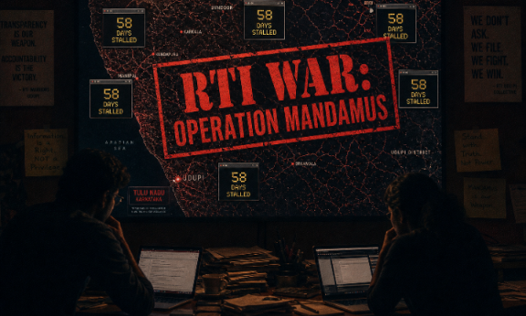

THE VOLLEYBALL GAME IS OVER: Tuluvas Launch Digital Siege as Secretariat Fails to Produce Action Taken Report
By Tuluva Guardian Bureau | Udupi-Bangalore | May 1, 2026
BANGALORE — It has been 58 days since the Gayathri Report was submitted on March 4, 2026. For nearly two months, the Department of Kannada and Culture has maintained a strategic silence, playing what activists call a "bureaucratic game of volleyball" with the aspirations of the Tulu-speaking community.
Today, the silence was broken not by the government, but by a coordinated RTI Offensive. Under the banner of Operation Mandamus, organized by the Taulava Gèl Inayo Koolya (TGIK), dozens of Right to Information (RTI) applications were filed simultaneously, targeting the internal file notings of the Secretariat.
"We are no longer asking for the Action Taken Report (ATR). We are extracting it. If the Secretariat believes they can bury the Gayathri Report in a dusty shelf, they have underestimated the digital reach of the Tuluva people."
— TGIK Command Statement
The Legal Path to the High Court
This surge isn't just a protest; it's a legal maneuver. By filing these RTIs and IPGRS grievances, the Tuluva Guardian is establishing a documented "refusal to act" by the state. This paper trail is the ammunition required for a Writ of Mandamus—a court order from the High Court compelling the government to perform its constitutional duty.
The Tuluva Guardian has officially suspended historical research to focus entirely on this administrative war. The message to the Secretariat is clear: Release the ATR, or see us in Court.